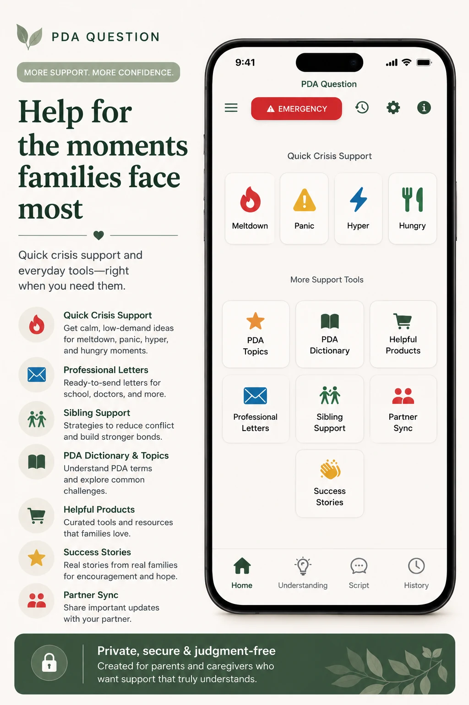

“We have to leave.”
A transition stalls and every reminder raises the temperature.
The exhaustion. The judgment. The uncertainty. The feeling that advice everyone insists should help only adds more pressure.

It begins with capacity, autonomy, and felt safety—not an assumption that behavior is deliberate defiance.
A transition stalls and every reminder raises the temperature.
Masking all day may leave very little capacity at home.
Even reassuring words can feel like more input during overwhelm.
Sibling and caregiver needs collide in an already stretched household.
Use the response to consider demand pressure, nervous-system capacity, autonomy, and felt safety.

Open language you can adapt for the child, another adult, or your own internal voice.

Script can also offer calm self-talk when you need a pause: words that make room for your own limits, reduce urgency, and help you choose the next manageable step. This is educational support, not therapy.